Which option includes one of the valid conditions for writing a resonating structure? किस विकल्प में एक प्रतिध्वनित संरचना लिखने के लिए मान्य शर्तों में से एक शामिल है?
AThe nuclei of the atoms in each structure may change their positions. प्रत्येक संरचना में परमाणुओं के नाभिक अपनी स्थिति बदल सकते हैं।
BThe contributing structures can have a different number of unpaired electrons. योगदान करने वाली संरचनाओं में अयुग्मित इलेक्ट्रॉॉनों की भिन्न संख्याा हो सकती है।
CThe contributing structures should have similar energies. योगदान करने वाली संरचनाओं में समान ऊर्जा होनी चाहिए।
DThe contribution of resonating structures increases with a decrease in the number of covalent bonds. सहसंयोजक बंधों की संख्याा में कमी के साथ प्रतिध्वनित संरचनाओं का योगदान बढ़ता है।
EXPLANATIONCorrect Answer: C
The correct answer is C because it matches the definition: The contributing structures should have similar energies. योगदान करने वाली संरचनाओं में समान ऊर्जा होनी चाहिए। .
Question 38ID: 2622791Page: 755
Which type of hybridisation takes place in a methane molecule? मीथेन अणु में किस प्रकार का संकरण होता है?
Asp sp
B[Image/Diagram]
C[Image/Diagram]
D[Image/Diagram]
EXPLANATIONCorrect Answer: C
The correct answer is C because it matches the definition: [Image/Diagram].
Question 39ID: 2622804Page: 755
Which of the following is not a correct rule for aromaticity? निम्नलिखित में से कौन सा सुगन्धितता के लिए सही नियम नहीं है?
AThe molecule must be cyclic. अणु चक्रीीय होना चाहिए।
BEach atom in the ring must be conjugated. रिंंग में प्रत्येक परमाणु संयुग्मित होना चाहिए।
C[Image/Diagram]
DThe molecule must have a planar structure. अणु में एक तलीय संरचना होनी चाहिए।
EXPLANATIONCorrect Answer: C
The correct answer is C because it matches the definition: [Image/Diagram].
Question 40ID: 2622805Page: 756
What is the name of the nonaromatic hydrocarbon, where the molecule is not cyclic or not planar? एक गैर-सुगंधित हाइड्रोोकार्बन, जहां अणु चक्रीीय नहीं है या प्लाानर नहीं है, का क्याा नाम है?
AAliphatic एलिफैटिक
BAlicyclic ऐलिसाइक्लिक
CAlkaloid एलकेलॉइड
DAldose एल्डोोज
EXPLANATIONCorrect Answer: A
The correct answer is A because it matches the definition: Aliphatic एलिफैटिक .
Question 41ID: 2622815Page: 756
In the elimination of HX from an alkyl halide, the predominating product is the more highly substituted alkene. What is it known as? ऐल्किल हैलाइड से एचएक्स के विलोपन में, प्रबल उत्पााद अधिक उच्च स्थानापन्न ऐल्कीीन होता है। इसे किस नाम से जाना जाता है?
AZaitsev’s rule जैत्सेव नियम
BBredt’s rule ब्रेड्ट का नियम
CMarkownikoff’s rule मार्कोनीकॉफ का नियम
DHuckel’s rule हकल का नियम
EXPLANATIONCorrect Answer: A
The correct answer is A because it matches the definition: Zaitsev’s rule जैत्सेव नियम .
Question 42ID: 2622868Page: 757
Which of the following reacts with Grignard reagents to give primary alcohols? प्रााथमिक अल्कोोहल देने के लिए निम्नलिखित में से कौन ग्रिग्नाार्ड अभिकर्मकों के साथ प्रतिक्रिया करता है?
AEsters एस्टर
BFormaldehyde फॉर्मल्डेहाइड
CAldehydes एल्डीीहाइड
DKetones केटोन्स
EXPLANATIONCorrect Answer: B
The correct answer is B because it matches the definition: Formaldehyde फॉर्मल्डेहाइड .
Question 43ID: 2622869Page: 757
Which of the following is obtained when tertiary alcohols are oxidised? निम्न में से कौन सा प्रााप्त होता है जब तृतीयक अल्कोोहल ऑक्सीीकृत होते हैं?
AAldehydes एल्डीीहाइड
BKetones कीटोन्स
CCarboxylic acids कार्बोक्जिलिक एसिड
DNo reaction with oxidising agents ऑक्सीीकरण एजेंटों के साथ कोई प्रतिक्रिया नहीं करते
EXPLANATIONCorrect Answer: D
The correct answer is D because it matches the definition: No reaction with oxidising agents ऑक्सीीकरण एजेंटों के साथ कोई प्रतिक्रिया नहीं करते .
Question 44ID: 2622883Page: 757
Which of the following is a two-component system? निम्नलिखित में से कौन सा दो-घटक प्रणाली है?
A[Image/Diagram]
B[Image/Diagram]
CSulphur system सल्फर प्रणाली
DWater system पानी की व्यवस्था
EXPLANATIONCorrect Answer: B
The correct answer is B because it matches the definition: [Image/Diagram].
Question 45ID: 2622884Page: 758
What is the degree of freedom of ice – water – vapour system? बर्फ-जल-वाष्प प्रणाली की मुक्त डिग्रीी क्याा है?
A0 0
B1 1
C2 2
D3 3
EXPLANATIONCorrect Answer: A
The correct answer is A because it matches the definition: 0 0 .
Question 46ID: 2622895Page: 758
Which of the following is NOT valid according to Kohlrausch law? कोलराउश नियम के अनुसार निम्नललखित में से कौन मान्य नहीं है?
AThe molar conductivity of a solution is the sum of independent contributions from each ion. किसी विलयन की मोलर चालकता प्रत्येक आयन के स्वतंत्र योगदान का योग होती है।
BThe electrolytic solution is infinitely dilute. इलेक्ट्रोोलाइटिक विलयन असीम रूप से पतला होता है।
CMolar conductivity depends on the concentration of the electrolyte. मोलर चालकता इलेक्ट्रोोलाइट की सांद्रता पर निर्भर करती है।
DThe conductivity of a solution is composed of the effect of positive ions. एक विलयन की चालकता सकारात्मक आयनों के प्रभाव से बनी होती है।
EXPLANATIONCorrect Answer: D
The correct answer is D because it matches the definition: The conductivity of a solution is composed of the effect of positive ions. एक विलयन की चालकता सकारात्मक आयनों के प्रभाव से बनी होती है। .
Question 47ID: 2622901Page: 759
The calomel electrode is an example of which type of electrode? कैलोमेल इलेक्ट्रोोड किस प्रकार के इलेक्ट्रोोड का एक उदाहरण है?
AAmalgam electrode अमलगम इलेक्ट्रोोड
BMetal-insoluble salt electrode धातु-अघुलनशील नमक इलेक्ट्रोोड
CMetal-metal ion electrode धातु-धातु आयन इलेक्ट्रोोड
The correct answer is B because it matches the definition: Metal-insoluble salt electrode धातु-अघुलनशील नमक इलेक्ट्रोोड .
Question 48ID: 2622902Page: 759
In which type of electrode, the metal is dissolved in mercury rather than in the pure form? किस प्रकार के इलेक्ट्रोोड में धातु शुद्ध रूप में न होकर पारे में घुल जाती है?
AMetal-metal ion electrode धातु-धातु आयन इलेक्ट्रोोड
The correct answer is C because it matches the definition: Amalgam electrode अमलगम इलेक्ट्रोोड .
Question 49ID: 2622937Page: 760
Which of the following is used to make non-inflammable photographic films? निम्नलिखित में से कौन सा पदार्थ गैर ज्वलनशील फोटोग्रााफिक फिल्म बनाने के लिए प्रयोग किया जाता है?
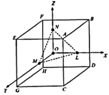
ACellulose acetate सेलूलोज एसीटेट
BCupra silk कपरा रेशम
CCellulose nitrate सेल्युलोज नाइट्रेट
DPyroxylin प्य्रोोक्सिलिन
EXPLANATIONCorrect Answer: A
The correct answer is A because it matches the definition: Cellulose acetate सेलूलोज एसीटेट .
Question 50ID: 2622954Page: 760
Which of the following is NOT a correct representation of the faces of a cube in terms of Miller indices? निम्नलिखित में से कौन मिलर सूचकांकों के संदर्भ में एक घन के फलकों का सही प्रतिनिधित्व नहीं है?
A010 010
B001 001
C[Image/Diagram]
D111 111
EXPLANATIONCorrect Answer: D
The correct answer is D because it matches the definition: 111 111 .
Question 51ID: 2622955Page: 761
For a general reaction of the type, Which of the following is correct? प्रकार की एक सामान्य प्रतिक्रिया के लिए, निम्न में से कौन सा सही है?
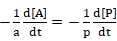
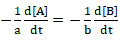
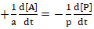
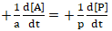
A[Image/Diagram]
B[Image/Diagram]
C[Image/Diagram]
D[Image/Diagram]
EXPLANATIONCorrect Answer: B
The correct answer is B because it matches the definition: [Image/Diagram].
Question 52ID: 2622965Page: 761
Which of the following is NOT a general group trend of d-block elements? निम्नलिखित में से कौन डी-ब्लॉॉक तत्वोंों की सामान्य समूह प्रवृत्ति नहीं है?
AThey have high melting and boiling points. इनका गलनांक और क्वथनांक उच्च होता है।
BTheyexhibitcatalytic properties. ये कैटेलिटिक गुण प्रदर्शित करते हैं।
CThey are ductile. वे लचीले हैं।
DMost of the transition elements are bad conductors of electricity. अधिकांश संक्रमण तत्व विद्युत के कुचालक होते हैं।
EXPLANATIONCorrect Answer: D
The correct answer is D because it matches the definition: Most of the transition elements are bad conductors of electricity. अधिकांश संक्रमण तत्व विद्युत के कुचालक होते हैं। .
Question 53ID: 2622966Page: 762
Which of the following hydrated ions of the first transition series is colourless? निम्नलिखित में से प्रथम संक्रमण श्रेणी का कौन सा हाइड्रेेटेड आयन रंगहीन है?
A[Image/Diagram]
B[Image/Diagram]
C[Image/Diagram]
D[Image/Diagram]
EXPLANATIONCorrect Answer: A
The correct answer is A because it matches the definition: [Image/Diagram].
Question 54ID: 2622981Page: 762
Which of the following is an exceptional neutral ligand? निम्नलिखित में से कौन सा एक असाधारण तटस्थ लिगेंड है?
A[Image/Diagram]
B[Image/Diagram]
C[Image/Diagram]
DCO CO
EXPLANATIONCorrect Answer: D
The correct answer is D because it matches the definition: CO CO .
Question 55ID: 2622982Page: 763
Which of the following complicated molecule is abbreviated as “oxine”? निम्नलिखित में से कौन सा जटिल अणु "ऑक्सााइन" के रूप में संक्षिप्त है?
AOxalate ऑक्साालेट
B8-quinoline 8-क्विनोलिन
CDimethyl glyoxime डाइमिथाइल ग्लाायॉक्सिम
DDimethyl sulphoxide डाइमिथाइल सल्फोोक्सााइड
EXPLANATIONCorrect Answer: B
The correct answer is B because it matches the definition: 8-quinoline 8-क्विनोलिन .
Question 56ID: 2623022Page: 763
What is defined as the process of finding and extracting useful data from raw DNA sequence data sets? कच्चे डीएनए अनुक्रम डेटा सेट से उपयोगी डेटा खोजने और निकालने की प्रक्रिया के रूप में क्याा परिभाषित किया गया है?
AData mining डेटा माइनिंग
BGenetic code जेनेटिक कोड
CGene screening जीन स्क्रीीनिंग
DGenomic database mining जीनोमिक डेटाबेस माइनिंग
EXPLANATIONCorrect Answer: D
The correct answer is D because it matches the definition: Genomic database mining जीनोमिक डेटाबेस माइनिंग .
Question 57ID: 2623023Page: 763
Which of the following is used as a viscosity improver in motor oils? निम्नलिखित में से किसका उपयोग मोटर तेलों में चिपचिपापन सुधारने वाले के रूप में किया जाता है?
The correct answer is C because it matches the definition: Poly (p-tertbutylstyrene) पॉली (p- टर्टब्यूटिलस्टााइरीन) .
Question 58ID: 2623031Page: 764
Which method is used to remove all the oxygen and nitrogen present in the form of impurity in Zirconium and Titanium? ज़िरकोनियम और टाइटेनियम में मौजूद सभी ऑक्सीीजन और नाइट्रोोजन को अशुद्धता के रूप में हटाने के लिए किस विधि का उपयोग किया जाता है?
AMond’s process मोंड की प्रक्रिया
BZone refining क्षेत्र शोधन
CSmelting प्रगलन
DVan Arkel de Boer process वैन आर्केल डी बोअर प्रक्रिया
EXPLANATIONCorrect Answer: D
The correct answer is D because it matches the definition: Van Arkel de Boer process वैन आर्केल डी बोअर प्रक्रिया .
Question 59ID: 2623052Page: 764
Which of the following polymers can be described as an interconnected branched polymer as all polymer chains are linked to form one giant molecule? निम्नलिखित में से कौन से पॉलिमर को परस्पर जुड़े शाखित बहुलक के रूप में वर्णित किया जा सकता है क्योंोंकि सभी बहुलक श्रृंृंखलाएँ एक विशाल अणु बनाने के लिए जुड़ीी हुई हैं?
ALinear polymer रैखिक पॉलिमर
BBranched polymer शाखाओं वाले पॉलिमर
CNetwork polymer नेटवर्क पॉलिमर
DCross-linked polymer क्रॉॉस-लिंक्ड पॉलिमर
EXPLANATIONCorrect Answer: C
The correct answer is C because it matches the definition: Network polymer नेटवर्क पॉलिमर .
Question 60ID: 2623053Page: 765
Initiation in which type of polymerisation employs a “catalyst” that is restored at the end of the polymerization and does not become incorporated into the terminated polymer chain? किस प्रकार क पोलीमराइजेशन का प्राारंभ एक "उत्प्रेरक" को नियोजित करती है जो पोलीमराइजेशन के अंत में बहाल हो जाता है और समाप्त पॉलीमर श्रृंृंखला में शामिल नहीं हो जाता है?
The correct answer is C because it matches the definition: Cationic polymerisation धनायनित पोलीमराइजेशन .
Question 61ID: 2623061Page: 765
Which option contains correct information about the isoelectric point of proteins? किस विकल्प में प्रोोटीन के समविद्युत बिंदु के बारे में सही जानकारी है?
AIs always neutral. सदैव तटस्थ रहता है।
BHigh in case of the preponderance of basic amino acids. बुनियादी अमीनो अम्ल की प्रबलता के मामले में उच्च।
CLow in case of the preponderance of basic amino acids. बुनियादी अमीनो अम्ल की प्रबलता के मामले में कम
DHigh in case of the preponderance of acidic amino acids. अम्लीीय अमीनो अम्ल की प्रबलता के मामले में उच्च।
EXPLANATIONCorrect Answer: B
The correct answer is B because it matches the definition: High in case of the preponderance of basic amino acids. बुनियादी अमीनो अम्ल की प्रबलता के मामले में उच्च। .
Question 62ID: 2623104Page: 766
What is the formula to determine the average velocity of gas molecules? गैस के अणुओं का औसत वेग ज्ञाात करने का सूत्र क्याा है ?
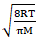
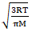
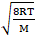
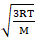
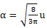
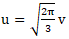
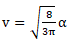
A[Image/Diagram]
B[Image/Diagram]
C[Image/Diagram]
D[Image/Diagram]
EXPLANATIONCorrect Answer: A
The correct answer is A because it matches the definition: [Image/Diagram].
Question 63ID: 2623105Page: 766
Which of the following expressions correctly informs about the relationship between the most probable velocity and root mean square velocity of the molecules of a gas? निम्नलिखित में से कौन सा व्यंजक किसी गैस के अणुओं के सर्वाधिक संभावित वेग और मूल माध्य वर्ग वेग के बीच संबंध के बारे में सही जानकारी देता है?
A[Image/Diagram]
B[Image/Diagram]
C[Image/Diagram]
D[Image/Diagram]
EXPLANATIONCorrect Answer: D
The correct answer is D because it matches the definition: [Image/Diagram].
Question 64ID: 2623114Page: 767
What is the SI unit of the coefficient of viscosity? श्याानता गुणांक का सआई मात्रक क्याा है?
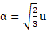
A[Image/Diagram]
B[Image/Diagram]
C[Image/Diagram]
D[Image/Diagram]
EXPLANATIONCorrect Answer: B
The correct answer is B because it matches the definition: [Image/Diagram].
Question 65ID: 2623115Page: 767
What is the effect of temperature change on the viscosity of a liquid? किसी द्रव की श्याानता पर तापमान परिवर्तन का क्याा प्रभाव पड़ता है?
AViscosity increases with an increase in temperature तापमान में वृद्धि के साथ श्याानता बढ़ती है
BViscosity decreases with an increase in temperature तापमान में वृद्धि के साथ श्याानता घट जाती है
CViscosity decreases with a decrease in temperature तापमान में कमी के साथ श्याानता कम हो जाती है
DViscosity remains unaffected with an increase in temperature तापमान में वृद्धि के साथ श्याानता अप्रभावित रहती है
EXPLANATIONCorrect Answer: B
The correct answer is B because it matches the definition: Viscosity decreases with an increase in temperature तापमान में वृद्धि के साथ श्याानता घट जाती है .
Question 66ID: 2623128Page: 768
Which of the following was first obtained from silk protein, sericin and contains an alcoholic hydroxyl group that participates in ester formation? निम्नलिखित में से कौन सा पहले सिल्क प्रोोटीन, सेरिसिन से प्रााप्त किया गया था और इसमें अल्कोोहल हाइड्रॉॉक्सिल समूह होता है जो एस्टर गठन में भाग लेता है?
ATyrosine टायरोसिन
BGlycine ग्लााइसीन
CSerine सेरीन
DProline प्रोोलाइन
EXPLANATIONCorrect Answer: C
The correct answer is C because it matches the definition: Serine सेरीन .
Question 67ID: 2623144Page: 768
Which of the following refers to the deposition of a metallic coating onto an object by putting a negative charge onto the object and immersing it into a solution containing a salt of the metal to be deposited? निम्नलिखित में से कौन वस्तु पर एक ऋणात्मक आवेश डालकर और उसे जमा करने के लिए धातु के नमक युक्त घोल में डुबो कर किसी वस्तु पर धातु की परत के जमाव को संदर्भित करता है?
AMetal Plating मेटल प्लेटिंग
BElectroplating इलेक्ट्रोोप्लेटिंग
CStripping स्ट्रिपिंग
DOxidation ऑक्सीीडेशन
EXPLANATIONCorrect Answer: B
The correct answer is B because it matches the definition: Electroplating इलेक्ट्रोोप्लेटिंग .